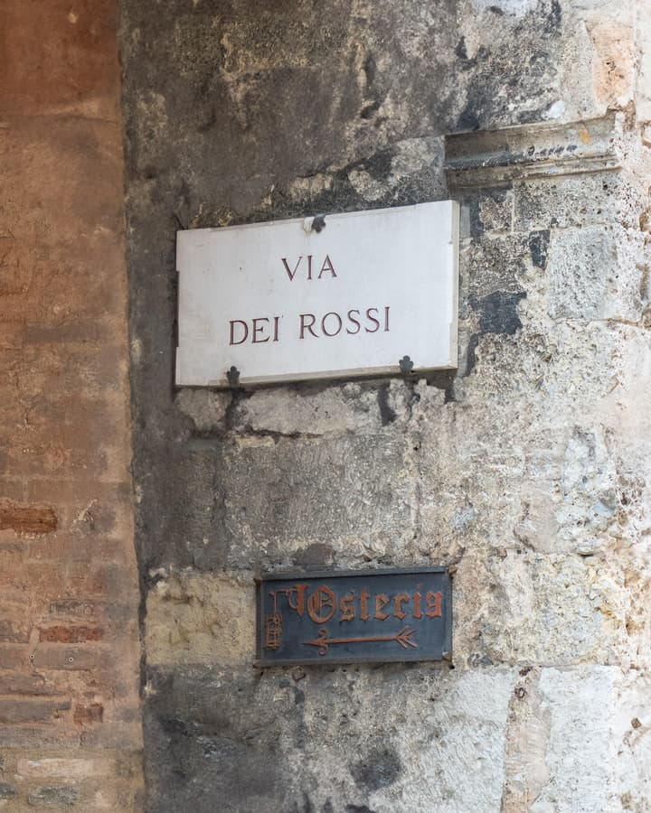

Osteria dei Rossi · Siena
Dove siamo a Siena, in Via dei Rossi
Siamo in Via dei Rossi 79/81, dentro le mura di Siena, a circa 5 minuti a piedi da Piazza del Campo.
Via dei Rossi, 79/8153100 Siena
La via
Seguite la freccia in Via dei Rossi
Via dei Rossi scende da Banchi di Sopra a Piazza San Francesco e prende il nome dal castellare duecentesco della famiglia Rossi. La targa di marmo e l'insegna di ferro con la freccia segnano la strada fino alla nostra porta.
- Circa 5 minuti a piedi dal Campo
- In fondo, la Basilica di San Francesco
- Contrada del Bruco


Come arrivare a piedi o in auto
A piedi
Da Piazza del Campo si arriva a piedi in circa 5 minuti. In fondo alla via c'è la Basilica di San Francesco.
In auto
In auto, il parcheggio San Francesco, in Via Baldassarre Peruzzi, è collegato al centro dalle scale mobili.
Il centro dentro le mura è ZTL, zona a traffico limitato: verificate le regole prima di entrare in auto.
Orari e come prenotare
Il numero è lo stesso: scegliete se parlarci o scriverci.
Orari
- Martedì–sabato
- 12:30–15:00 e 19:00–22:30
- Domenica
- 12:30–15:00, solo pranzo
- Domenica sera e lunedì
- chiuso
Gli orari possono cambiare: chiamateci per conferma.
Domande e risposte per la vostra visita
Dove si trova Osteria dei Rossi e quanto dista da Piazza del Campo?
Si trova in Via dei Rossi 79/81, a Siena, dentro le mura, nella Contrada del Bruco. Piazza del Campo è a circa 5 minuti a piedi, e in fondo alla via sorge la Basilica di San Francesco.
Quali sono i giorni e gli orari di apertura?
Da martedì a sabato siamo aperti a pranzo dalle 12:30 alle 15:00 e a cena dalle 19:00 alle 22:30; la domenica solo a pranzo, dalle 12:30 alle 15:00. La domenica sera e il lunedì siamo chiusi. Gli orari possono cambiare: chiamate lo +39 0577 287592 per conferma.
Come si prenota?
Si prenota per telefono allo +39 0577 287592 o su WhatsApp allo stesso numero; il pulsante Prenota del sito offre entrambe le possibilità. Gli orari possono cambiare, quindi conviene chiamare per conferma.
Ci sono tavoli all'aperto?
Sì, davanti all'ingresso ci sono tavoli sulla strada, con ombrelloni color crema. L'ingresso è in Via dei Rossi 79/81, a Siena, dentro le mura. Per prenotare chiamate lo +39 0577 287592 o scrivete su WhatsApp allo stesso numero.
Dove si parcheggia? Si può arrivare in auto?
Tutto il centro dentro le mura è a traffico limitato (ZTL), quindi controllate le regole prima di entrare in auto. Il parcheggio San Francesco, in Via Baldassarre Peruzzi, è collegato al centro da scale mobili.